import pandas as pdTitanic dataset analysis using Pandas and Numpy
Data Visualization
Numpy
Pandas
Data Analysis
A sample notebook to analyze any research data.
This notebook follows the fastai style conventions.
Importnig packages
import numpy as npfrom scipy import stats, integrate
import scipy
import matplotlib.pyplot as plt
import seaborn as sns
sns.set(color_codes=True)Populating the interactive namespace from numpy and matplotlibProblem Statement
What is the dependent variable and what are the factors in this data? Who had more chances of survival, what are the factors?
Data exploration section will investigate the dependent variable ‘Survived’ and understand the relationship of factors such as being a female, or child, or being in a certain class, or having sibling/spouse, parent/child affect the survival rate. We will also come up with a hypothesis and test it.
data = pd.read_csv('Titanic.csv')data.head()| PassengerId | Survived | Pclass | Name | Sex | Age | SibSp | Parch | Ticket | Fare | Cabin | Embarked | |
|---|---|---|---|---|---|---|---|---|---|---|---|---|
| 0 | 1 | 0 | 3 | Braund, Mr. Owen Harris | male | 22.0 | 1 | 0 | A/5 21171 | 7.2500 | NaN | S |
| 1 | 2 | 1 | 1 | Cumings, Mrs. John Bradley (Florence Briggs Th... | female | 38.0 | 1 | 0 | PC 17599 | 71.2833 | C85 | C |
| 2 | 3 | 1 | 3 | Heikkinen, Miss. Laina | female | 26.0 | 0 | 0 | STON/O2. 3101282 | 7.9250 | NaN | S |
| 3 | 4 | 1 | 1 | Futrelle, Mrs. Jacques Heath (Lily May Peel) | female | 35.0 | 1 | 0 | 113803 | 53.1000 | C123 | S |
| 4 | 5 | 0 | 3 | Allen, Mr. William Henry | male | 35.0 | 0 | 0 | 373450 | 8.0500 | NaN | S |
Data Wrangling
data.info()<class 'pandas.core.frame.DataFrame'>
RangeIndex: 891 entries, 0 to 890
Data columns (total 12 columns):
PassengerId 891 non-null int64
Survived 891 non-null int64
Pclass 891 non-null int64
Name 891 non-null object
Sex 891 non-null object
Age 714 non-null float64
SibSp 891 non-null int64
Parch 891 non-null int64
Ticket 891 non-null object
Fare 891 non-null float64
Cabin 204 non-null object
Embarked 889 non-null object
dtypes: float64(2), int64(5), object(5)
memory usage: 66.2+ KBThe titanic data given has 891 rows, most of the columns have 891 rows except Age, Cabin and Embarked.
print(data['Cabin'].describe())
print(data['Embarked'].describe())
print(data['Age'].describe())count 204
unique 147
top B96 B98
freq 4
Name: Cabin, dtype: object
count 889
unique 3
top S
freq 644
Name: Embarked, dtype: object
count 714.000000
mean 29.699118
std 14.526497
min 0.420000
25% 20.125000
50% 28.000000
75% 38.000000
max 80.000000
Name: Age, dtype: float64data['Cabin'].value_counts().plot(kind ='bar', figsize= (15,3))
sns.plt.title('Frequency/Counts by Cabin')<matplotlib.text.Text>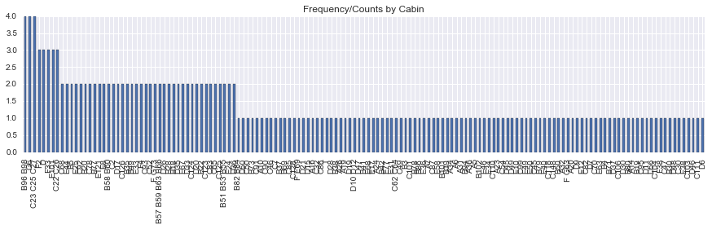
Cabin has 147 unique values for 204 rows, Max freq is 4. It is difficult to draw conclusion on this data and since it has just 22.8% of rows, I will be dropping this column from any further analysis. Also PassengerId does not give me any useful information, so I will drop that column as well
del data['Cabin']
del data['PassengerId']Let us also drop the rows with missing values for Age and Embarked now
data.dropna(subset = ['Embarked', 'Age'], inplace = True)data.info()<class 'pandas.core.frame.DataFrame'>
Int64Index: 712 entries, 0 to 890
Data columns (total 10 columns):
Survived 712 non-null int64
Pclass 712 non-null int64
Name 712 non-null object
Sex 712 non-null object
Age 712 non-null float64
SibSp 712 non-null int64
Parch 712 non-null int64
Ticket 712 non-null object
Fare 712 non-null float64
Embarked 712 non-null object
dtypes: float64(2), int64(4), object(4)
memory usage: 50.1+ KBPclass should not be numeric, so let us update it to upper, middle and lower class. For that, we need to look at its relationship with Fare
sns.barplot(x="Pclass", y="Fare", data=data);
sns.plt.title('Pclass by Mean Fare')<matplotlib.text.Text>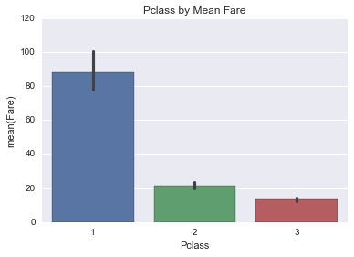
Mean Fare of Pclass 1 was 88 dollars, Pclass 2 was 21.47 dollars and Pclass 3 was 13.22 dollars, so let us update the values of Pclass to ‘Upper’ for Class 1, ‘Middle’ for Class 2 and ‘Lower’ for Class 3
data.loc[data['Pclass'] == 1, 'Pclass'] = 'Upper'
data.loc[data['Pclass'] == 2, 'Pclass'] = 'Middle'
data.loc[data['Pclass'] == 3, 'Pclass'] = 'Lower'Data Exploration
# Distribution of numeric variables
fig, (ax1, ax2, ax3, ax4) = plt.subplots(ncols=4, figsize = (15,3))
data['Age'].plot(kind ='hist', bins = 25, ax=ax1)
ax1.set_title('Age')
data['Fare'].plot(kind = 'hist', bins= 25, ax=ax2)
ax2.set_title('Fare')
data['Parch'].plot(kind = 'hist', ax=ax3)
ax3.set_title('Parch')
data['SibSp'].plot(kind = 'hist', ax=ax4)
ax4.set_title('SibSp')<matplotlib.text.Text>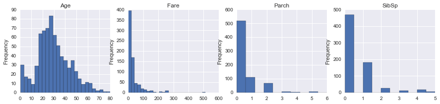
# Distribution of categorical variables
fig, (ax1, ax2, ax3, ax4) = plt.subplots(ncols=4, figsize = (12,3))
data['Sex'].value_counts().plot(kind ='bar', ax=ax1)
ax1.set_title('Sex')
data['Survived'].value_counts().plot(kind = 'bar', ax=ax2)
ax2.set_title('Survived')
ax2.set_xticklabels(['Perished', 'Survived'])
data['Pclass'].value_counts().plot(kind = 'bar', ax=ax3)
ax3.set_title('Pclass')
data['Embarked'].value_counts().plot(kind = 'bar', ax=ax4)
ax4.set_title('Embarked')<matplotlib.text.Text>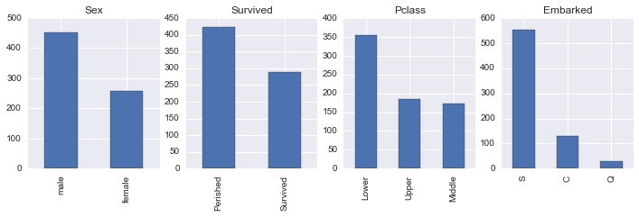
The above plots show the distributions of numerical and categorical columns in our data. Age ranges from 0 to 80 years with mean and mode around 25-30 years, Fare ranges from 0 to over 500 dollars, Parch and SibSp has its mode at 0 meaning most people did not travel with any parent/child or sibling/spouse, There were around 453 males and 289 females onboard, 424 perished and 288 survived. Most of the passengers were in Lower Pclass and embarked at station S.
Understanding the dependencies of dependent and independent variables
Since for the given data, more than 50% of the passengers perished, We will investigate the factors that survival of the passengers depend on and would like to answer questions like did females have more chance of surviving, how does age or fare affect the survival, does having a parent or child, or sibling or spouse influence survival and how does Pclass affect survival. Dependent variable is ‘Survived’ which gives 0 for rows for passengers who perished and 1 for passengers that survived. Independent variables are Sex, Pclass, Embarked, Age, Fare etc.
There could be other factors or variables like location of cabins or location/state(sleep or awake) of passengers at the time of the accident etc which we had limited data for and hence ave been omitted from the analysis. We also omitted rows that had missing values for ‘Age’ and ‘Embarked’ so that will also skew the statistical analysis a bit.
#Function to create grouped data by factors
def grouped_by_factors(df,factor):
mean_by_factor = df.groupby(factor).describe()
return mean_by_factorSome understanding of mean/max/std/count would be helpful for our analysis so I created a function to display statistics using groupby function. We will also be creating plots to help visualize the data.
Understanding Dependent variable ‘Survived’ by numerical columns
‘Survived’ by Age and Fare
fig, (ax1, ax2) = plt.subplots(ncols=2, figsize =(12,3))
fig1 = sns.regplot(x="Age", y="Survived", data=data, ax = ax1)
fig2 = sns.regplot(x="Fare", y="Survived", data=data, ax = ax2)
plt.suptitle("Perished vs. Survived by Age and Fare", size=12)
fig1.set(ylabel='Survival Rate'), fig2.set(ylabel='Survival Rate')([<matplotlib.text.Text>], [<matplotlib.text.Text>])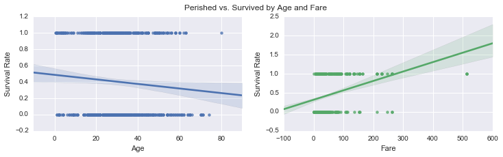
‘Survived’ by SibSp and Parch
g = sns.PairGrid(data, y_vars=["Survived"], x_vars=["SibSp", "Parch"], size=4)
g.map(sns.barplot, color=".4")
g.set(ylabel='Survival Rate')
plt.suptitle("Perished vs. Survived by SibSp and Parch", size=12)<matplotlib.text.Text>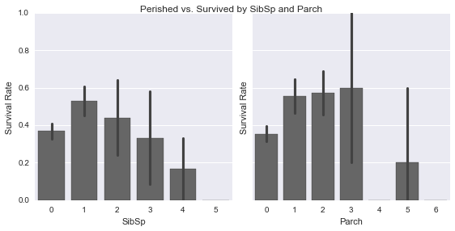
grouped_by_factors(data,'Survived')| Age | Fare | Parch | SibSp | ||
|---|---|---|---|---|---|
| Survived | |||||
| 0 | count | 424.000000 | 424.000000 | 424.000000 | 424.000000 |
| mean | 30.626179 | 22.965456 | 0.365566 | 0.525943 | |
| std | 14.172110 | 31.448825 | 0.878341 | 1.044760 | |
| min | 1.000000 | 0.000000 | 0.000000 | 0.000000 | |
| 25% | 21.000000 | 7.895800 | 0.000000 | 0.000000 | |
| 50% | 28.000000 | 11.887500 | 0.000000 | 0.000000 | |
| 75% | 39.000000 | 26.550000 | 0.000000 | 1.000000 | |
| max | 74.000000 | 263.000000 | 6.000000 | 5.000000 | |
| 1 | count | 288.000000 | 288.000000 | 288.000000 | 288.000000 |
| mean | 28.193299 | 51.647672 | 0.531250 | 0.496528 | |
| std | 14.859146 | 70.664499 | 0.808747 | 0.732512 | |
| min | 0.420000 | 0.000000 | 0.000000 | 0.000000 | |
| 25% | 19.000000 | 13.000000 | 0.000000 | 0.000000 | |
| 50% | 28.000000 | 26.250000 | 0.000000 | 0.000000 | |
| 75% | 36.000000 | 65.000000 | 1.000000 | 1.000000 | |
| max | 80.000000 | 512.329200 | 5.000000 | 4.000000 |
The data shows 424 passengers did not survive and 288 did.
Average age of passengers that survived was 28.2(std=14.8) years as compared to 30.62(14.17) for those who did not survive. On average, passengers who survived paid higher fare(mean=51.6 dollars) as compared to who did not(mean=22.9 dollars).
From the barchart, the survival rate for those travelling with 1/2 sibling or spouse and 1/2/3 parent or children was higher than the ones that did not. The relationship of survival is not linear with the number of sibsp/parch which could be due to lack of data.
From the correlation plot, Survival rate is positively correlated to Fare and negatively correlated to Age which means younger people and those who paid more had higher chances of surviving
Understanding Dependent variable ‘Survived’ by Categorical columns
‘Survived’ by Pclass
grouped_by_factors(data,'Pclass')| Age | Fare | Parch | SibSp | Survived | ||
|---|---|---|---|---|---|---|
| Pclass | ||||||
| Lower | count | 355.000000 | 355.000000 | 355.000000 | 355.000000 | 355.000000 |
| mean | 25.140620 | 13.229435 | 0.456338 | 0.585915 | 0.239437 | |
| std | 12.495398 | 10.043158 | 0.971447 | 1.157303 | 0.427342 | |
| min | 0.420000 | 0.000000 | 0.000000 | 0.000000 | 0.000000 | |
| 25% | 18.000000 | 7.775000 | 0.000000 | 0.000000 | 0.000000 | |
| 50% | 24.000000 | 8.050000 | 0.000000 | 0.000000 | 0.000000 | |
| 75% | 32.000000 | 15.741700 | 1.000000 | 1.000000 | 0.000000 | |
| max | 74.000000 | 56.495800 | 6.000000 | 5.000000 | 1.000000 | |
| Middle | count | 173.000000 | 173.000000 | 173.000000 | 173.000000 | 173.000000 |
| mean | 29.877630 | 21.471556 | 0.404624 | 0.427746 | 0.479769 | |
| std | 14.001077 | 13.187429 | 0.705775 | 0.611645 | 0.501041 | |
| min | 0.670000 | 10.500000 | 0.000000 | 0.000000 | 0.000000 | |
| 25% | 23.000000 | 13.000000 | 0.000000 | 0.000000 | 0.000000 | |
| 50% | 29.000000 | 15.045800 | 0.000000 | 0.000000 | 0.000000 | |
| 75% | 36.000000 | 26.000000 | 1.000000 | 1.000000 | 1.000000 | |
| max | 70.000000 | 73.500000 | 3.000000 | 3.000000 | 1.000000 | |
| Upper | count | 184.000000 | 184.000000 | 184.000000 | 184.000000 | 184.000000 |
| mean | 38.105543 | 88.048121 | 0.413043 | 0.456522 | 0.652174 | |
| std | 14.778904 | 81.293524 | 0.734061 | 0.634406 | 0.477580 | |
| min | 0.920000 | 0.000000 | 0.000000 | 0.000000 | 0.000000 | |
| 25% | 27.000000 | 33.890600 | 0.000000 | 0.000000 | 0.000000 | |
| 50% | 37.000000 | 67.950000 | 0.000000 | 0.000000 | 1.000000 | |
| 75% | 49.000000 | 107.043750 | 1.000000 | 1.000000 | 1.000000 | |
| max | 80.000000 | 512.329200 | 4.000000 | 3.000000 | 1.000000 |
fig, (ax1, ax2) = plt.subplots(ncols=2, figsize =(12,3))
fig1 = sns.countplot(x="Pclass", data=data, hue='Survived', palette="Greens_d", ax=ax1);
plt.legend(["Perished", "Survived"])
fig2 = sns.barplot(x="Pclass", y="Survived", data=data, ax=ax2);
plt.suptitle("Survival rate by Pclass", size=12)<matplotlib.text.Text>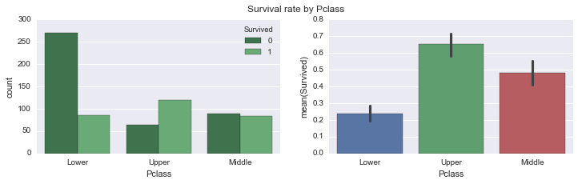
Mean Fare of Upper Class was 88 dollars, Middle Class was 21.47 dollars and Lower Class was 13.22 dollars. Most survivors were from upper class(mean survival = 0.65), followed by middle(mean survival = 0.48) and then lower(mean survival = 0.24). Most of the passengers who did not survive belonged to the lower class Pclass shows linear relation to survival probability. There could be several reasons for that. People in upper classes could have boarded lifeboats before the lower classes, it also fits well with the correlation to fare in the prev plot.
‘Survived’ by Embarked
sns.countplot(x="Embarked", data=data, hue='Survived', palette="Greens_d");
sns.countplot(x="Embarked", data=data, hue='Pclass', palette="Reds_d");
plt.suptitle("Valuecounts of Survivors by Pclass", size=12)
plt.suptitle("Valuecounts of Female vs Male survivors", size=12)
label = ["Perished", "Survived", "Lower", "Upper", "Middle"]
plt.legend(label, loc='upper center')<matplotlib.legend.Legend>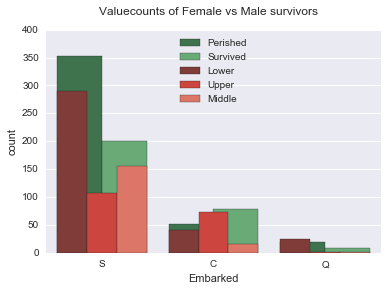
Most of the passengers were in lower Pclass and embarked from ‘S’ followed by ‘C’ and ‘Q’. Does not show much relationship to survival rate
‘Survived’ by Sex
data.groupby('Sex').describe()| Age | Fare | Parch | SibSp | Survived | ||
|---|---|---|---|---|---|---|
| Sex | ||||||
| female | count | 259.000000 | 259.000000 | 259.000000 | 259.000000 | 259.000000 |
| mean | 27.745174 | 47.332433 | 0.714286 | 0.644788 | 0.752896 | |
| std | 13.989760 | 61.517487 | 1.069045 | 0.930367 | 0.432163 | |
| min | 0.750000 | 6.750000 | 0.000000 | 0.000000 | 0.000000 | |
| 25% | 18.000000 | 13.000000 | 0.000000 | 0.000000 | 1.000000 | |
| 50% | 27.000000 | 26.000000 | 0.000000 | 0.000000 | 1.000000 | |
| 75% | 36.000000 | 56.964600 | 1.000000 | 1.000000 | 1.000000 | |
| max | 63.000000 | 512.329200 | 6.000000 | 5.000000 | 1.000000 | |
| male | count | 453.000000 | 453.000000 | 453.000000 | 453.000000 | 453.000000 |
| mean | 30.726645 | 27.268836 | 0.271523 | 0.439294 | 0.205298 | |
| std | 14.678201 | 45.841889 | 0.651076 | 0.923609 | 0.404366 | |
| min | 0.420000 | 0.000000 | 0.000000 | 0.000000 | 0.000000 | |
| 25% | 21.000000 | 7.895800 | 0.000000 | 0.000000 | 0.000000 | |
| 50% | 29.000000 | 13.000000 | 0.000000 | 0.000000 | 0.000000 | |
| 75% | 39.000000 | 28.500000 | 0.000000 | 1.000000 | 0.000000 | |
| max | 80.000000 | 512.329200 | 5.000000 | 5.000000 | 1.000000 |
sns.countplot(x="Sex", data=data, hue='Survived', palette="Greens_d");
plt.suptitle("Valuecounts of Female vs Male survivors", size=12)
label = ["Perished", "Survived"]
plt.legend(label, loc='upper center')<matplotlib.legend.Legend>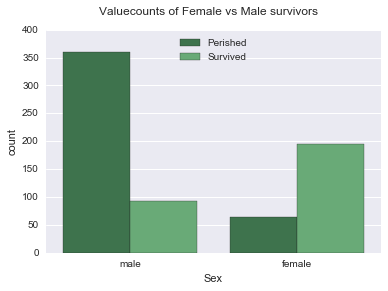
Mean age of females who boarded the ship was 27-28 years and males was 30-31 years. There were 259 females and 453 males, more number of females(mean survival = 0.75) survived than males(mean survival = 0.20)
For the purpose of this analysis, I will pick Sex, Pclass and Age as major factors and investigate them further. The reason why I am picking them is because they show correlation with survival rate. Survival showed correlation to Fare as well but since the fare is represented by Pclass, I picked Pclass over Fare. Although other factors also affect survival, but I will focus on these three for this exercise
Understanding Pclass and Sex as a factor
sns.barplot(x="Pclass", y="Survived", hue="Sex", data=data);
plt.suptitle("Mean Survival rate of Female vs Male survivors by Pclass", size=12)<matplotlib.text.Text>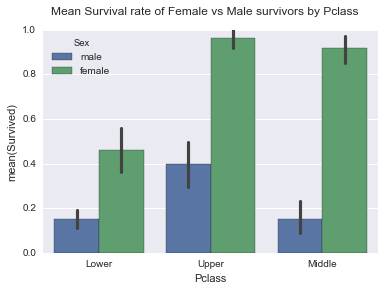
There were 314 females and 577 males, mean for female survivors(mean=0.74,std= 0.44) is more than males(mean=0.19,std= 0.39) across all Pclasses, Survival has linear relationship with class. Females had high probability of survival in both Upper and Middle class. Only upper class males had high probability of survival, which was lower than low class female passengers however
Understanding Age as a factor
print(grouped_by_factors(data,'Age').head())
print(grouped_by_factors(data,'Age').tail()) Fare Parch SibSp Survived
Age
0.42 count 1.0000 1.0 1.0 1.0
mean 8.5167 1.0 0.0 1.0
std NaN NaN NaN NaN
min 8.5167 1.0 0.0 1.0
25% 8.5167 1.0 0.0 1.0
Fare Parch SibSp Survived
Age
80.0 min 30.0 0.0 0.0 1.0
25% 30.0 0.0 0.0 1.0
50% 30.0 0.0 0.0 1.0
75% 30.0 0.0 0.0 1.0
max 30.0 0.0 0.0 1.0surv_age = data[data['Survived'] == 1]
g = surv_age['Age'].plot(kind='hist', figsize=[12,6], alpha=.8)
notsurv_age = data[data['Survived'] == 0]
notsurv_age['Age'].plot(kind='hist', figsize=[12,6], alpha=.4)
plt.legend(label)
g.set(xlabel='Age')
plt.suptitle("Distribution of Age for Perished and Survived", size=12)<matplotlib.text.Text>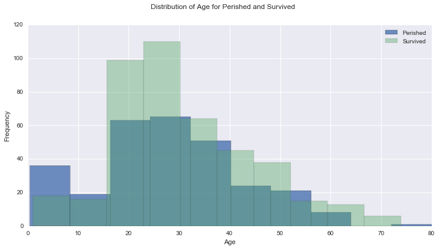
Age of the passengers ranged from 0 to 80 years. Green bar is for passengers who did not survive and the blue is for those who survived. The distribution is almost normal distribution with similar shape and mode around 20 years. Below is the correlation for Age vs mean survived, it shows slight negative correlation with pearson’r value of -0.082
Correlation of ‘Survived’ with Age
sns.set(style="darkgrid", color_codes=True)
g = sns.jointplot("Age", "Survived", data=data, kind="reg",color="g", size=7)
plt.subplots_adjust(top=0.95)
plt.suptitle("Distribution of Age for Perished and Survived", size=12)<matplotlib.text.Text>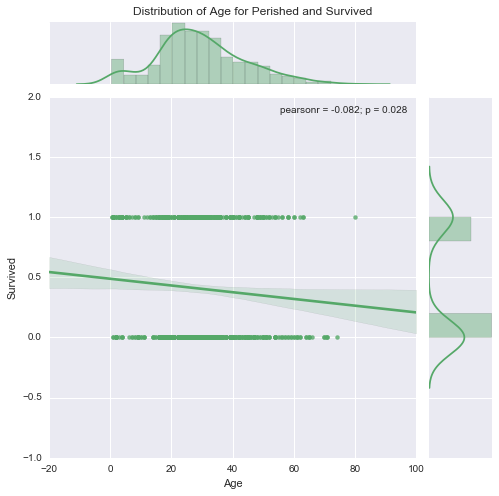
Correlation of ‘Survived’ with Age and Sex
g = sns.lmplot(x="Age", y="Survived", col="Sex", hue="Sex", data=data, y_jitter=.02, logistic=True)
plt.subplots_adjust(top=0.9)
plt.suptitle("Correlation of Age with Survival Rate", size=12)<matplotlib.text.Text>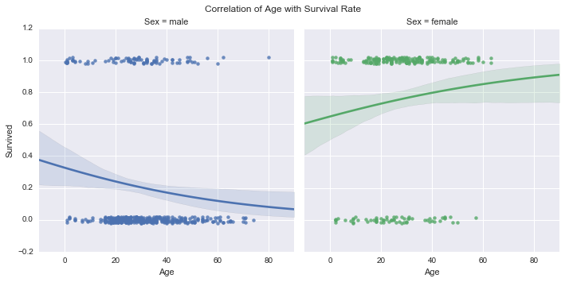
Survival probability was higher for Younger Men and Older Women, Side by side comparison of males and females by age further supports that
g = sns.factorplot(x="Survived", y="Age", hue="Sex", data=data, size=6, kind="bar", palette="muted")
g.despine(left=True)
plt.subplots_adjust(top=0.95)
plt.suptitle("Survived vs Age for males and females", size=12)
g.set_xticklabels(['Perished', 'Survived'])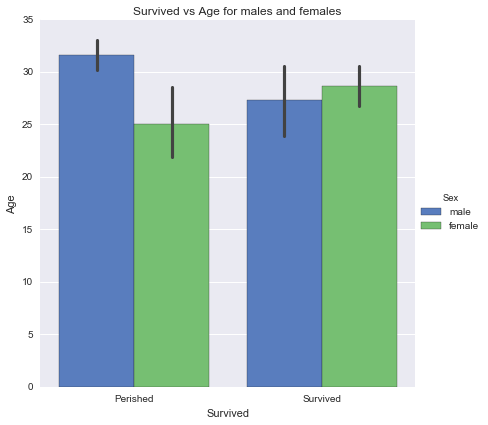
Hypothesis testing
I have a hypothesis that passengers that are lower in age(<15 years) had greater chance of survival than females.
Null Hypothesis would be that the difference in chances of survival of passengers greater or lower than 15 years is not significant and alternate would be that it is significant.
H0: µchild = µfemale at α = 0.05,
HA: µchild ≠ µfemale at α = 0.05, where α is the t-critical at which the probability is .05 and µchild and µfemale are population means for the two groups.#Children under 15yrs of age
data_children = data[data['Age'] <= 15]#Females of age greater than 15 years
data_female = data[(data['Sex'] == 'female') & (data['Age'] > 15)]scipy.stats.ttest_ind(data_children['Survived'], data_female['Survived'], axis=0, equal_var=False, nan_policy='propagate')Ttest_indResult(statistic=-2.978953154108325, pvalue=0.0034528377861817636)Since p value is low, the difference in mean survival is significant for females vs. children. Negative t-statistic shows that the mean survival of females is more than that of children
Conclusions
In Conclusion with the given dataset, Most contributing factors are ‘Sex’ and Pclass. Women had the most probability of survival in general. Survival rate is positively correlated to Fare and negatively correlated to Age which means younger people and those who paid more had higher chances of surviving. Females had positive correlation of survival with age and Males had negative correlation. Most survivors were from Upper Pclass followed by medium and lower class passengers. Most of the passengers in lower class perished. Passengers with any parent/child/sibling or spouse had higher chance at survival than the ones that did not. The analysis has following limitations: Omitted rows with missing values for ‘Age’ and ‘emabarked’ Did not draw conclusions based on ‘Name’ column dropped ‘Cabin’ and ‘PassengerId’ during data wrangling phase The data set is limited, the complete dataset should contain data for 1500 passengers